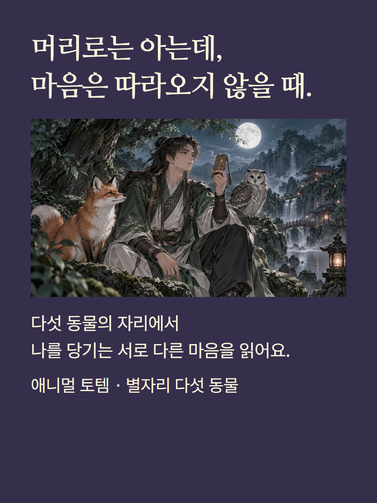
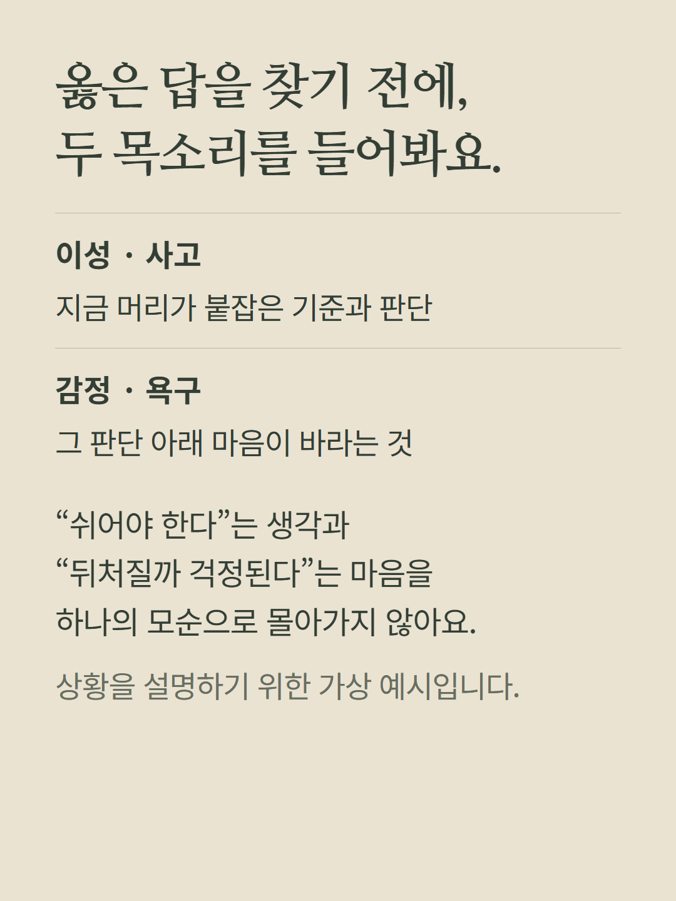
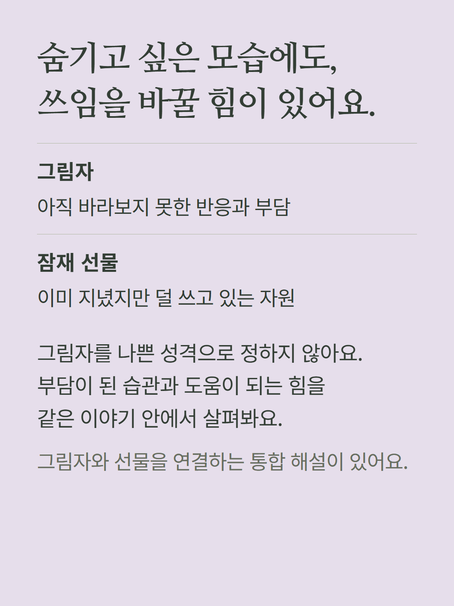
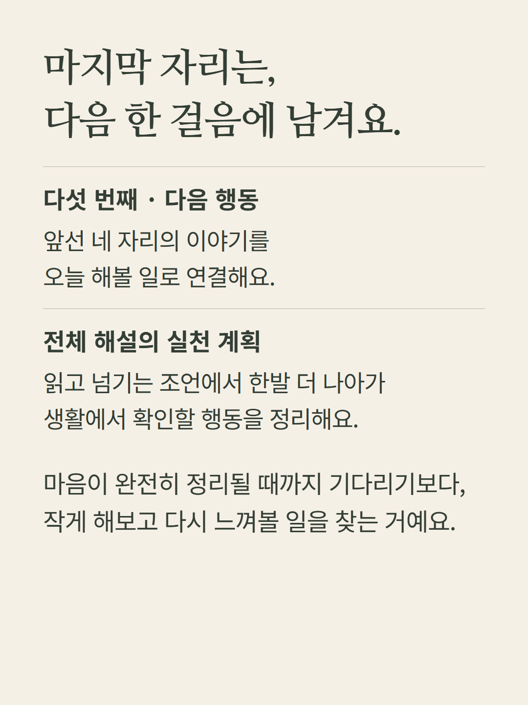
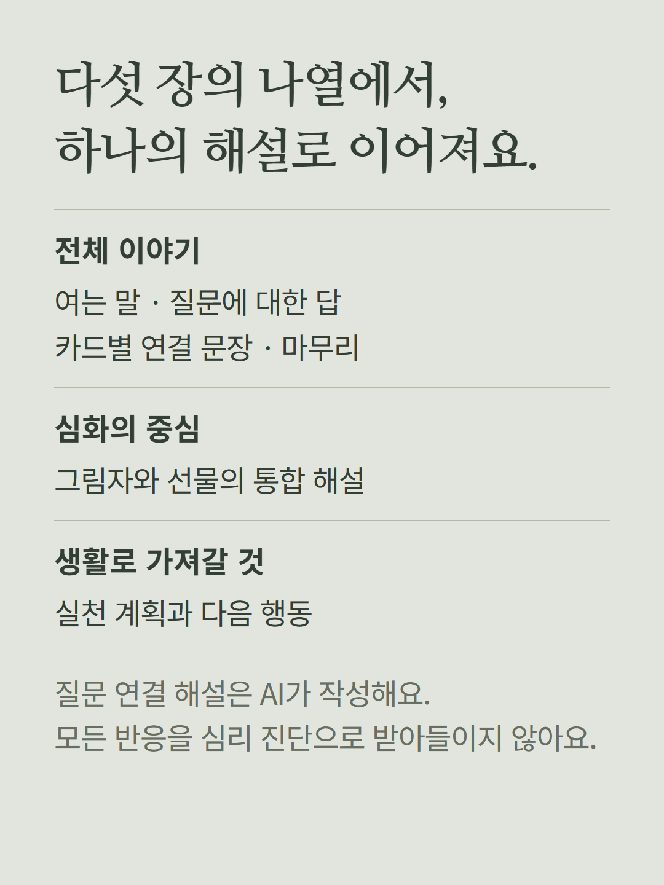
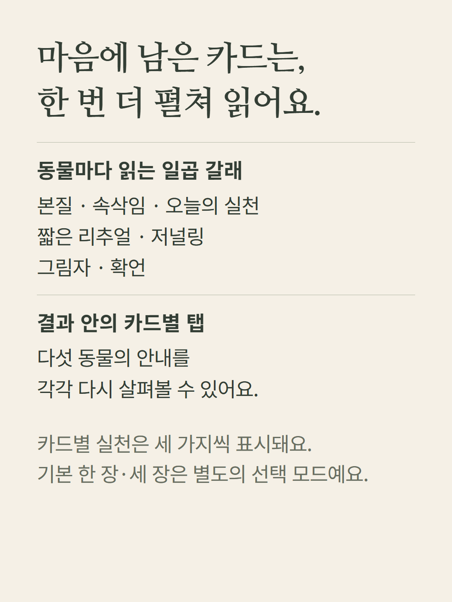
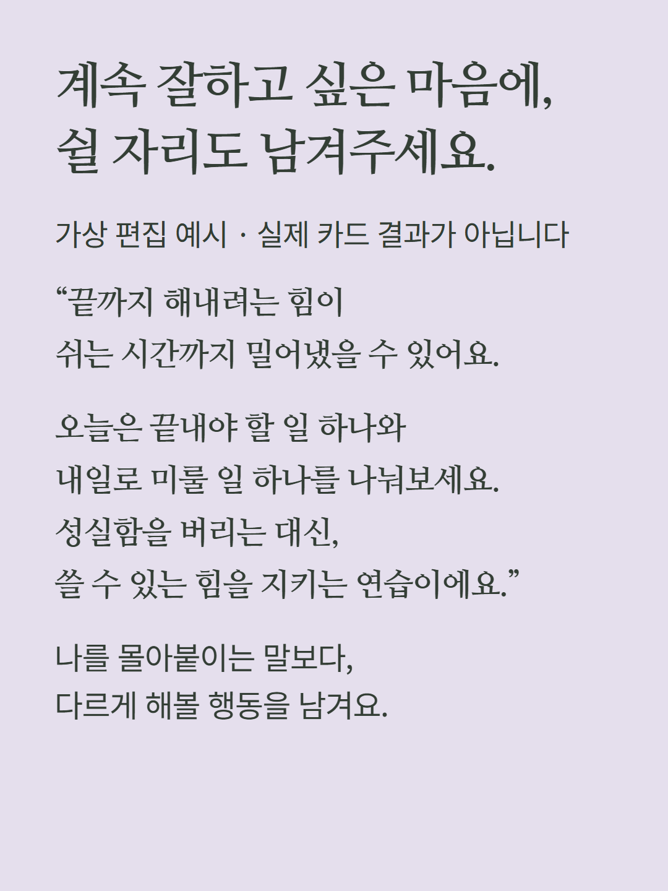
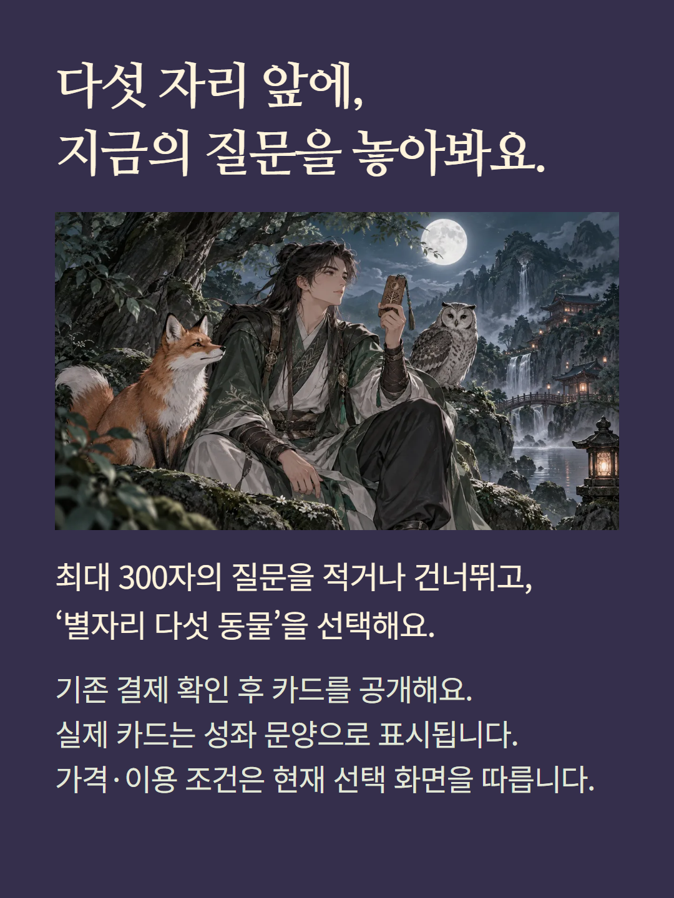

이성·감정·그림자·잠재 선물·다음 행동의 다섯 자리를 읽는 심화 모드입니다. 미래나 타인의 마음을 확정하는 검사가 아닙니다. 질문은 최대 300자이며 건너뛰기도 가능합니다. AI 질문 해설, 카드별 정적 안내와 그림자·선물 통합 해설이 제공됩니다. 예시는 가상 편집입니다. 일러스트는 분위기 이미지이며 실제 카드는 성좌 문양입니다. 기본 한 장·세 장 상담은 별도 모드입니다. 가격·재이용 조건은 기존 선택·결제 화면을 따릅니다.